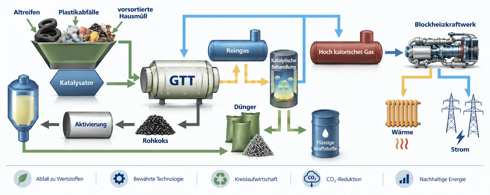
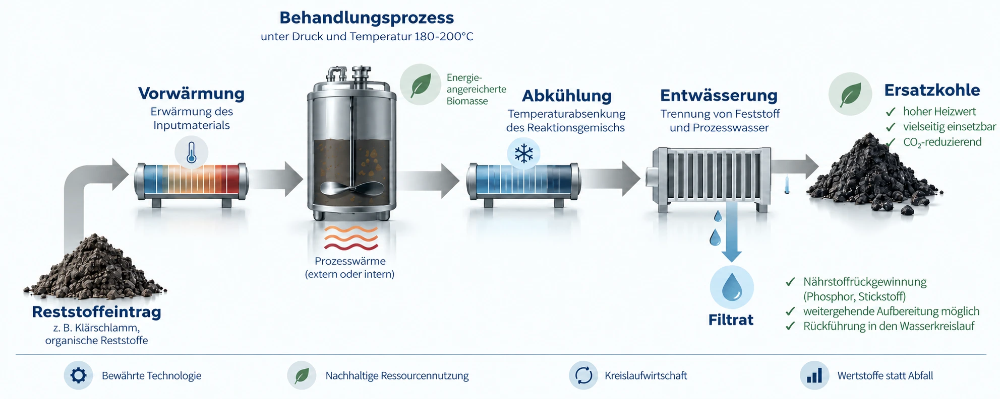

Zwei Verfahren – komplementär gedacht.
Für unterschiedliche Ausgangsstoffe stehen unterschiedliche Prozesswege zur Verfügung. Entscheidend ist nicht die Technologie allein, sondern ihre Passung zum konkreten Stoffstrom und Projekt.
GLOBATEC
Katalytische Entgasung von Haushaltsabfällen, Mischkunststoffen und Altreifen. Die Behandlung erfolgt thermo-katalytisch bei 450–550 °C. Der Abfall kommt nicht mit einer Flamme in Berührung; es handelt sich nicht um einen Verbrennungsprozess.

Zum Vergrößern anklicken
Produkte / nutzbare Fraktionen
Gas · Öl · Rohkoks – rCB · Energie · Wärme
Verwertung feuchter organischer Reststoffe
Effiziente Technologie für Klärschlämme, Bioabfälle, Grünschnitt und Abfälle aus der Papierindustrie. Hydrothermale Behandlung bei 180–200 °C und erhöhtem Druck, ohne kostenintensive Vortrocknung.

Zum Vergrößern anklicken
Produkte / rückgewinnbare Stoffe
Ersatzbrennstoff (Ersatzkohle) · Wasser · Phosphor · Stickstoff